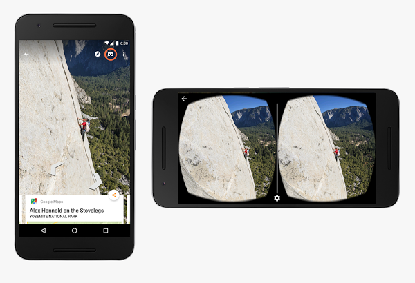

146
Posted by Shanea King-Roberson, Program Manager
As a developer, writing your app is important. But even more important is getting it into the hands of users. Ideally millions of users. To that end, you can now learn what it takes to design, validate, prototype, monetize, and market app ideas from the ground up and grow them into a scalable business with the new Tech Entrepreneur Nanodegree.
Designed by Google in partnership with Udacity, the Tech Entrepreneur Nanodegree, takes 4-7 months to complete. We have teamed up with most successful thought leaders in this space to provide students with a unique and battle-tested perspective. You’ll meet Geoffrey Moore, author of “Crossing the Chasm”, Pete Koomen, co-founder of Optimizely; Aaron Harris and Kevin Hale, Partners at Y-Combinator; Nir Eyal, author of the book “Hooked: How to build habit forming products” and co-founder of Product Hunt; Steve Chen, Co-Founder of YouTube, rapid prototyping company InVision and many more.
All of the content that make up this nanodegree is available online for free at udacity.com/google. In addition, Udacity provides paid services, including access to coaches, guidance on your project, help staying on track, career counseling, and a certificate when you complete the nanodegree.
[Interactive video]
Подождите немного. Если воспроизведение так и не начнется, перезагрузите устройство.
Coffee with a Googler: Learn about Vulkan and 3D Graphics
Upon completion, students will receive a joint certificate from Udacity and Google. The top graduates will also be invited to an exclusive pitch event, where they will have the opportunity to pitch their final product to venture capitalists at Google.
Labels: apps, developers, education, Udacity
Originally posted on Google Apps Developer Blog
Posted by Saurabh Gupta, Product Manager, Google Apps Script
Back in December 2014, we announced the IFRAME sandbox mode for HtmlService which has helped improve the speed of an application’s user interface (UI). It also gives users a choice of using a variety of JS libraries on the client. We have been working hard to improve IFRAME sandbox mode and have added many features since then, including: Firefox support, file uploads, top navigation support, and improved Google Picker API support. Since IFRAME sandbox provides faster UIs and has more capabilities than NATIVE and EMULATED modes, developers should only be using IFRAME sandbox mode moving forward.
As of today, both EMULATED and NATIVE modes in HtmlService are deprecated. Over the next few months, we plan on sunsetting both EMULATED and NATIVE modes in stages to give you enough time to migrate your scripts.
We have created a migration guide to help you with this transition. For many scripts, no changes will be needed, unless they use a small set of features described in the migration guide. The guide also describes a few potential breaking changes. It is important that you review all your scripts that use HtmlService to ensure that the switch to IFRAME sandbox mode does not cause them to fail.
Here’s the timeline:
In November 2015, all new scripts will default to IFRAME sandbox mode unless NATIVE mode is explicitly specified. For example, if you make a copy of an existing script, the new script will use IFRAME sandbox mode unless you have explicitly set the sandbox mode to NATIVE.
In December 2015 (see sunset schedule for exact dates), EMULATED mode will be shutdown. Any scripts explicitly using EMULATED mode will default to IFRAME sandbox mode.
On April 28th, 2016, all scripts will default to IFRAME sandbox unless you have explicitly specified NATIVE mode in your script. For example, if your script has not specified any mode, then it will change from using NATIVE mode to IFRAME sandbox mode. Please make sure that your UI works well in IFRAME sandbox mode.
On June 30th 2016, NATIVE mode will be shutdown. All scripts explicitly using NATIVE mode will default to IFRAME sandbox mode.
While deprecations may at times seem inconvenient, this staged deprecation should ease in the migration process. Our goal is to provide a modern and secure environment enabling developers to create great apps for their users with Google Apps Script.
20
Posted by Wesley Chun, Developer Advocate, Google Apps
Happy Monday! Have you ever been asked by your boss to do something simple (good) but long and tedious (bad)? Take for example, the simple task of counting up all of the YouTube views for your corporate videos and your competitors’. It doesn’t even have to be your boss. What if you and your gamer friends are competing to see whose gameplay clips are garnering the most attention? It’s easy to manually track ten videos, but how about 100 or even 1,000? While simple -- you can visit the YouTube to grab the view count for each video -- you know the real problem with a task like this is that you don’t scale with the amount of content, so it’s better to automate with a simple app instead. This is the exact scenario that my colleagues and I set out to address in the latest episode of the Launchpad Online, introducing users to a pair of Google developer tools that can help solve this particular problem:
The first developer tool covered is the YouTube Data API. You can access it like most modern Google APIs from your preferred programming environment using one of the Google APIs Client Libraries. However, this type of data generally lives in a spreadsheet, and if you’re using Google Sheets, you can instead write the app with Google Apps Script, a JavaScript environment running in Google’s cloud that, if authorized, can write that video information to the cells in your Sheet. YouTube is just one of the many supported services available to Apps Script developers.
As with all my Launchpad Online episodes, I walk you through a short code snippet (only eight lines this time) that will get you started building your own custom solution. If you’re new to the developer series, we share technical content aimed at novice Google developers… current tools with a little bit of code to help you launch your next app. Please give us your feedback below and tell us what topics you would like to see in future episodes!
2 757
Posted by Brandon Wuest, Software Engineer & Stereoscopic Sightseer
Google Cardboard is bringing virtual reality worldwide. Starting today, the Google Cardboard app is available in 39 languages and over 100 countries on both Android and iOS devices. Additionally, the Cardboard developer docs are now published in 10 languages to help developers build great VR experiences. With more than 15 million installs of Cardboard apps from Google Play, we're excited to bring VR to even more people around the world.
Anyone can make their own Cardboard viewer with the open designs ready for download. If you'd rather not DIY, choose from the growing family of certified viewers, including the Mattel View-Master and Zeiss VR One GX, on sale now.
The Cardboard SDKs for Android and Unity have been updated to address your top two requests: drift correction and Unity performance. This update includes a major overhaul of the sensor fusion algorithms that integrate the signals from the gyroscope and accelerometer. These improvements substantially decrease drift, especially on phones with lower-quality sensors. The Cardboard SDK for Unity now supports a fully Unity-native distortion pass. This improves performance by avoiding all major plugin overhead, and enables Cardboard apps to work with Metal rendering on iOS and multi-threaded rendering on Android. All of this adds up to better VR experiences for your users.
Finally, to help bring you to more places, you can now explore Google Street View in Cardboard. So, download the updated Google Street View app for Android or iOS, and grab your Cardboard to immerse yourself in destinations around the world.
With Cardboard available in more places, we're hoping to bring the world just a little bit closer to everyone. Happy exploring!
Originally posted to the Google Apps Developer blog
Posted by Edward Jones, Software Engineer, Google Apps Script and Wesley Chun, Developer Advocate, Google Apps
Have you ever wanted a server API that modifies cells in a Google Sheet, to execute a Google Apps Script app from outside of Google Apps, or a way to use Apps Script as an API platform? Today, we’re excited to announce you can do all that and more with the Google Apps Script Execution API. The Execution API allows developers to execute scripts from any client (browser, server, mobile, or any device). You provide the authorization, and the Execution API will run your script. If you’re new to Apps Script, it’s simply JavaScript code hosted in the cloud that can access authorized Google Apps data using the same technology that powers add-ons. The Execution API extends the ability to execute Apps Script code and unlocks the power of Docs, Sheets, Forms, and other supported services for developers.
One of our launch partners, Pear Deck, used the new API to create an interactive presentation tool that connects students to teachers by converting slide decks into interactive experiences. Their app calls the Execution API to automatically generate a Google Doc customized for each student, so everyone gets a personalized set of notes from the presentation. Without the use of Apps Script, their app would be limited to using PDFs and other static file types. Check out the video below to see how it works.
Bruce McPherson, a Google Developer Expert (GDE) for Google Apps, says: “The Execution API is a great tool for enabling what I call ‘incremental transition’ from Microsoft Office (and VBA) to Apps (and Apps Script). A mature Office workflow may involve a number of processes currently orchestrated by VBA, with data in various formats and locations. It can be a challenge to move an entire workload in one step, especially an automated process with many moving parts. This new capability enables the migration of data and process in manageable chunks.” You can find some of Bruce’s sample migration code using the Execution API here.
The Google Apps Script Execution API is live and ready for you to use today. To get started, check out the developer documentation and quickstarts. We invite you to show us what you build with the Execution API!
Labels: apis, apps script, execution api, google apps, google docs, javascript
Posted by, Laurence Moroney, Developer Advocate
Vulkan is the new generation, open standard API for efficient access to graphics and compute on modern GPUs. In this episode of Coffee with a Googler, Laurence meets with Shannon Woods, a Technical Program Manager in Google’s rendering teams to talk about plumbing code from your app down to the GPU!
Historically mobile apps have used Open GL ES to communicate with the GPU, but the hardware and API have evolved separately, impacting efficiency. Vulkan has been designed to organize the graphics space in much the same way as the underlying GPU, so it can be more efficient.
Android will support both Open GL ES and Vulkan, so developers can choose which API is right for them — and with Vulkan, precise control over the commands executed by the GPU allows for great optimization, as well as parallelization of code.
We also learn about the famous Utah Teapot, a standard reference object for 3D modellers, and how it is found in popular culture -- such as showing up in most animated movies. Have you spotted it? Watch this episode for some great guidance from Shannon on what you need to do as a developer to prepare for Vulkan, and how using could be of benefit to your apps!
Posted by Taylor Savage, Product Manager, Polymer
Yesterday in Amsterdam we kicked off the first ever Polymer Summit, joined live by 800 developers. We focused on three key themes: Develop, Design and Deploy, giving concrete advice on how you can build your web app from start to finish. You can watch a replay of the keynote here.
[Interactive video]
It has been amazing to see how much the community has grown and how far the project has come: what started as an experiment in a new way of developing on the web platform has steadily grown into the range of tools, product lines, and community contributions we saw presented throughout the Summit. Since Polymer 1.0 launched in May we’ve seen more than 150,000 public facing pages created with Polymer.
In case you missed any of the sessions, we’ve consolidated all of the recordings below:
Be sure to visit our YouTube channel for the session recordings. For the latest news and upcoming Polymer events, subscribe to the Polymer blog and follow us on Twitter @Polymer.
Posted by Wesley Chun, Developer Advocate, Google Apps
Have you ever booked a dining reservation, plane ticket, hotel room, concert ticket, or seats to the game from your favorite app, only to have to exit that booking app to enter the details into your calendar? It doesn’t make for a friendly user experience. Why can’t today’s apps do that for you automatically?
In case you missed it the episode 97 of #GoogleDev100 the other week, I aim to inspire how app developers can streamline that process with the help of the Google Calendar API. A short Python script, anchored by the following snippet, is illustrated to show developers how easy it is to programmatically add calendar events:
CALENDAR = apiclient.discovery.build('calendar', 'v3', http=creds.authorize(Http()))
GMT_OFF = '-07:00' # PDT/MST/GMT-7
EVENT = {
'summary': 'Dinner with friends',
'start': {'dateTime': '2015-09-18T19:00:00%s' % GMT_OFF},
'end': {'dateTime': '2015-09-18T22:00:00%s' % GMT_OFF},
'attendees': [
{'email': 'friend1@example.com'},
{'email': 'friend2@example.com'},
],
}
CALENDAR.events().insert(calendarId='primary', body=EVENT).execute()
For deeper dive into the script, check out the corresponding blogpost. With code like that, your app can automatically insert your relevant events into your users’ calendars, saving them the effort of manually doing it themselves. One of the surprising aspects is that a limited set of actions, such as RSVPing, is even available to non-Google Calendar users. By the way, inserting events is just the beginning. Developers can also delete or update events instantly in case that upcoming dinner gets pushed back a few weeks.Events can even be repeated with a recurrence rule. Attachments are also supported so you can provide your users a PDF of the concert tickets they just booked. Those are just some of the things the API is capable of.
Ready to get started? Much more information, including code samples in Java, PHP, .NET, Android, iOS, and more, can be found in the Google Calendar API documentation. If you’re new to the Launchpad Online developer series, we share technical content aimed at novice Google developers… the latest tools and features with a little bit of code to help you launch that app. Please give us your feedback below and tell us what topics you would like to see in future episodes!
Posted by Laurence Moroney, Developer Advocate.
App Indexing helps you get your mobile app found in Google Search. Once your app is indexed, mobile users who search for content related to your app can be guided directly to your app, helping you to increase your install base and improve user engagement.
In this episode of Coffee with a Googler, Laurence meets with Jennifer Lin from the App Indexing team, who demonstrates the possibilities!
Jennifer shares that Google has indexed over 50 billion deep links into apps, with searches returning these links to users, taking them directly into your app. She shares how the Daily Mail newspaper in the UK saw a 22% boost in search impressions, and app users spent around 20% more time reading and sharing articles when they came in via a deep link from Search. Additionally, Tabelog, a premier restaurant review app and site in Japan, saw an increase of 9.6% in page views within their app, and a 63% increase in Search impressions after adding their app to the index.
When searching with Google Search on your phone, if the app is already installed, and has content that matches what you’re looking for -- you can be directed straight into the app to get a very rich experience. Alternatively, if the app isn’t yet installed, but has matching content, you can be guided through an install experience for the app, without losing context, so that when the app launches, you’ll go straight to the content you were looking for! Jennifer demos both scenarios using real apps, showing how straightforward the user experience is.
You can learn more about App Indexing, including how to get started on the Google Developers App Indexing site. For more information about other Google Search for Developers APIs, check out g.co/DeveloperSearch.
Posted by Taylor Savage, Product Manager, Polymer
The Polymer Summit is almost here! We’ll officially kick off live from Amsterdam at 9:00AM GMT+2 this coming Tuesday, September 15th. To get the most out of the event, make sure to check out the speaker list and talk schedule on our site.
Can’t join us in person? Don’t worry, we’ve got you covered! You can tune into the summit live on www.polymer-project.org/summit. We will stream the keynote and all sessions over the course of the event. If you want us to send you a reminder to tune into the livestream, sign up here. We’ll also be publishing all of the talks as videos on the Chrome Developers YouTube Channel.
We’re looking forward to seeing you in person or remotely on Tuesday. Don’t forget to join the social conversations at #PolymerSummit!
Inspiring developers everywhere